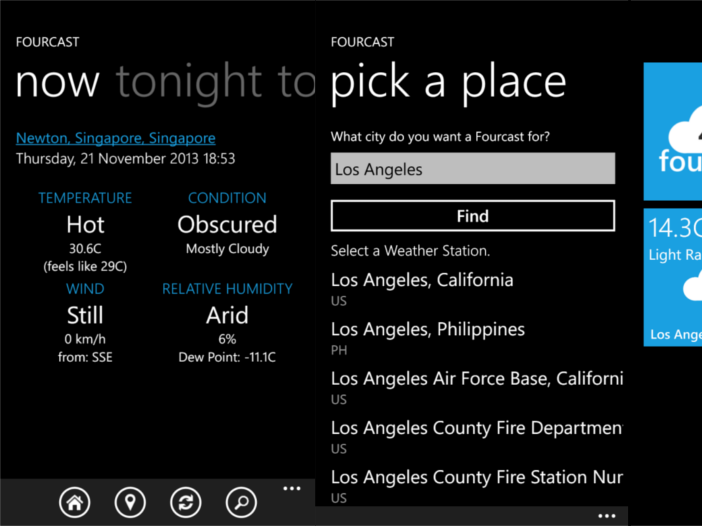
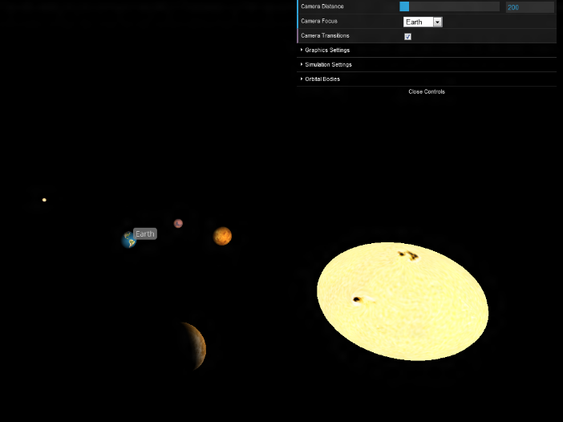
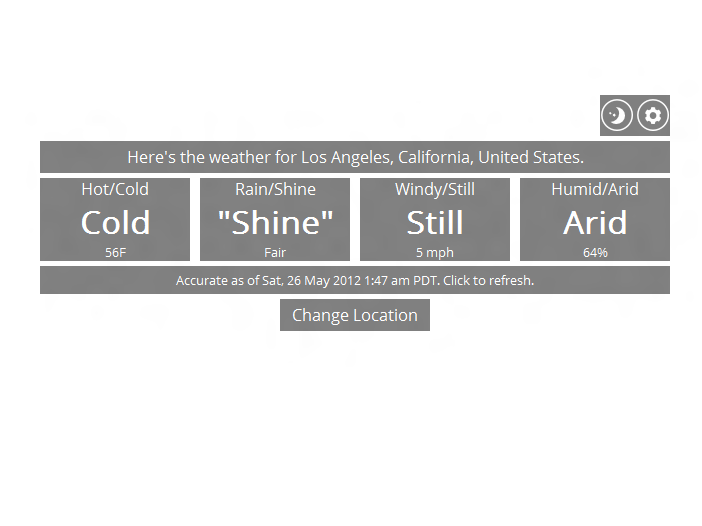

Things. (Some) stuff I've worked on.
Here're a few of the projects I've been involved with. Anything not included here is probably on GitHub.
Fourcast May 2012 to Present
Windows Phone 7/8 (C# and XAML)
Fourcast is a weather app with the same idea as 4-bit Webther, but that's where the similarities end. It distills weather forecasts down into their four most important components: the temperature, conditions, wind speed, and relative humidity.
Fourcast is available on the Windows Phone Store. It uses Weather Underground for its data.
ISAAC December 2011 to May 2012
HTML and JavaScript
ISAAC was my first JavaScript project. It's basically a browser-based star system simulator - like Universe Sandbox, but much simpler.
ISAAC's code is released under the MIT License. It uses the three.js library for graphics.
4-bit Webther May 2012
HTML and JavaScript
4-bit Webther was a side project built for fun, using the Yahoo! Weather API. The main motivation behind it was to get something running without any other frameworks or libraries.
Calendo August to October 2012
.NET Framework (C# and XAML)

Calendo is a command-based task management program, built for CS2103/T Software Engineering's group project. I was responsible for the UI, including the command-suggestion feature.